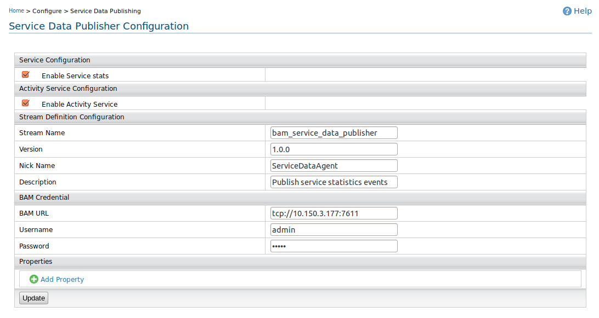

Configuring Service Data Agent
- Go to AS management console and select Configure→Service Data Publishing
from side panel.
- Fill the form.
- Tick on Enable Service stats and Enable Activity
Service.
- Setting up the Stream Definition Configuration
- Stream Name : Stream Name can be any string with alpha-numeric characters
- Version : Stream Version distinguishes different streams with the same Stream Name. Default version should be 1.0.0 .
- Nick Name : This is a user preferred nick name to the Stream Name in alpha-numeric characters
- Description : A description describing about the particular stream defined by Stream Name, Stream Version pair. Description should also consists of alpha-numeric characters.
- Setting up BAM Credentials.
- BAM URL : Enter the IP address of the BAM server.
And the port should be the thrift port
( ex: tcp://127.0.0.1:7611 ).
- Username: Put the BAM Thrift log-in user name.
Default value is admin.
- Password: Put the BAM Thrift log-in password.
Default value is admin.
- Click on Update button.
